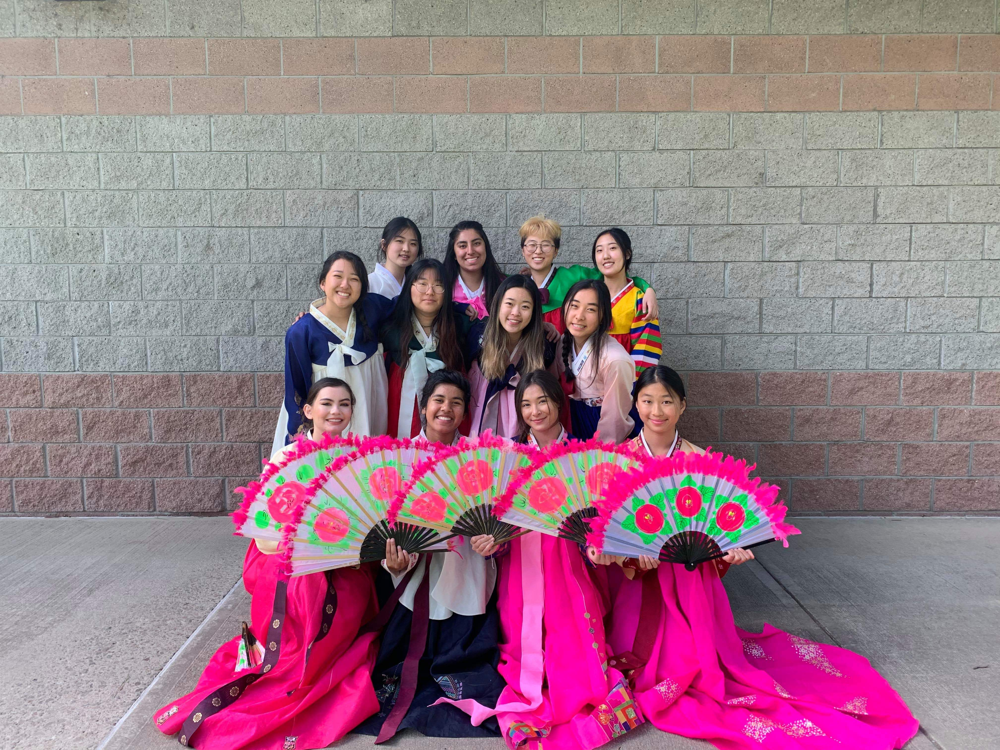
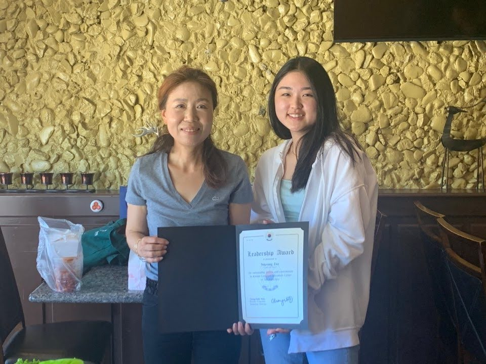
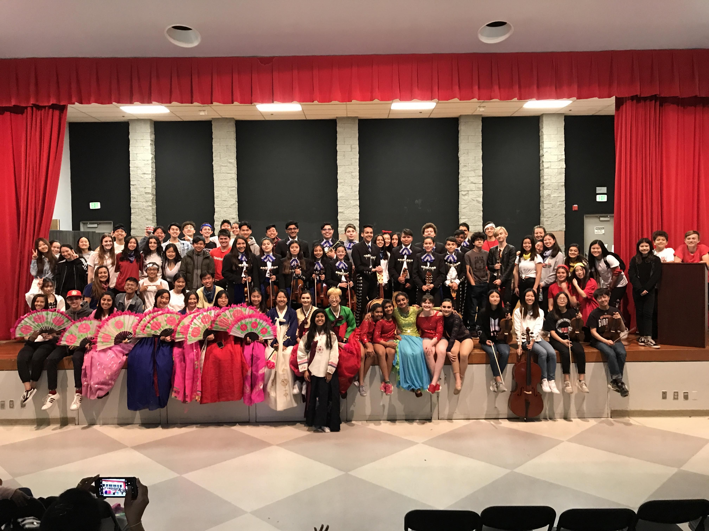
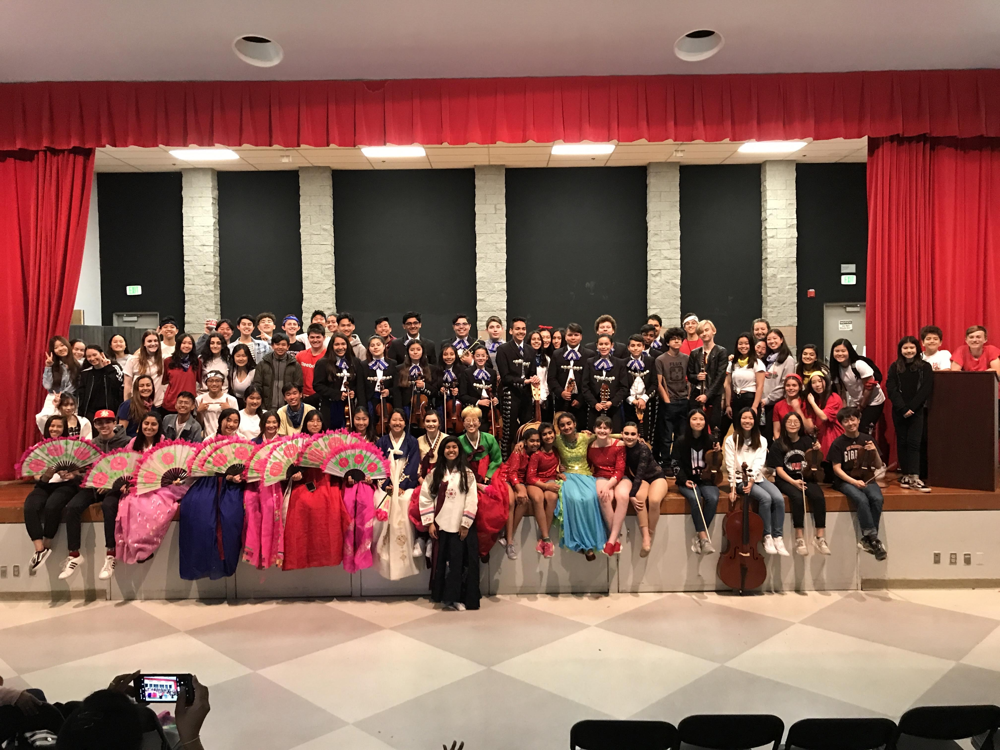

Nayoung Lee
My name is Nayoung Lee. I was born in San Jose in the California Bay Area, but was raised in Fremont. I moved to Pleasanton in the middle of elementary school, and am attending Foothill High School. My parents were born and raised in South Korea, and work hard to provide for the family. My parents are some of my strongest influences. They taught and continue to teach me how to be better as a person and grow my skills. My other influences include my peers, mentors, friends, and public figures, such as choreographer Sorah Yang and musician H.E.R. They all teach me valuable skills and character traits that I can utilize daily and in my work. My surroundings have made me realize the joys in my life of social relationships and diversity.
My career dream is to obtain a successful occupation at a company or make my own. I want to be able to make use of my business and marketing skills that I am passionate about, and be successful with my choices. I plan on majoring in a business pathway, and pursue it throughout my adulthood. My personal dreams are similar to my career aspirations. I want to be able to work in a space that I enjoy and will never dread. Being able to move around and socialize are very important factors to me. I want to travel around the world and connect with new people that are in the same field as me.
My experiences have made me grow into a more knowledgeable and skilled person. I am responsible and passionate about my work. I check to make sure that there are no flaws and that each work is the best of my abilities. I work well with others, as I am involved in team sports. I respect each opinion and idea, and try to incorporate them into the assignment or project.
I have been fortunate enough to be able to gather information and experience from my school and city. I am a part of DECA, an association where I can stimulate a business setting, and am exposed to many scenarios of marketing and business, and how to solve them. I have attended conferences and competitions, and have placed at some. I am familiar with a job setting, from my involvement at a part-time job at an educational center. Through my marketing class, I have learned more about how to work with Microsoft Word, PowerPoint, and Excel.
Marketing and business is a path that requires dedication and time, and I believe I can fulfill all the requirements and put in my best efforts to succeed in this path. I am aware that time is precious and society evolves very quickly, so I must be quick and efficient with my skills and ideas. To achieve this to my fullest potential, I must work hard to reach a higher level of education and gain more experience and personal skills at jobs, events, etc.
My portfolio demonstrates that I have the skills and drive for marketing and business in your company. I strive to utilize my experiences to bring the best work and benefits to your company. Thank you for your kind consideration and time to review my portfolio.
Experience
Co-President
• Spread and educate Korean culture to the school and community.
• Manage and plan meetings, multi-cultural performances, events, etc.
• Work with the Korean Education Center in San Francisco to introduce Korean classes to Foothill High School and enrich students with cultural resources.
Secretary
• Prepare events and organize cultural clubs for performances at school and local middle schools to celebrate diversity and spread our school’s various cultures.
• Chosen for presenting innovative ideas and enthusiasm for the future of MCC.
Volunteer
• Lighting Operator | Nov. 9, 2019 - Assisted lighting operations during the rehearsal and show, as well as took on many tasks throughout the event such as transporting materials, relaying communication, and securing theater floors.
• Video Operator | Nov. 10, 2018 - Controlled timing of executing videos during the show of over 1,000 audience members.
Education
UC Riverside
Portfolio




